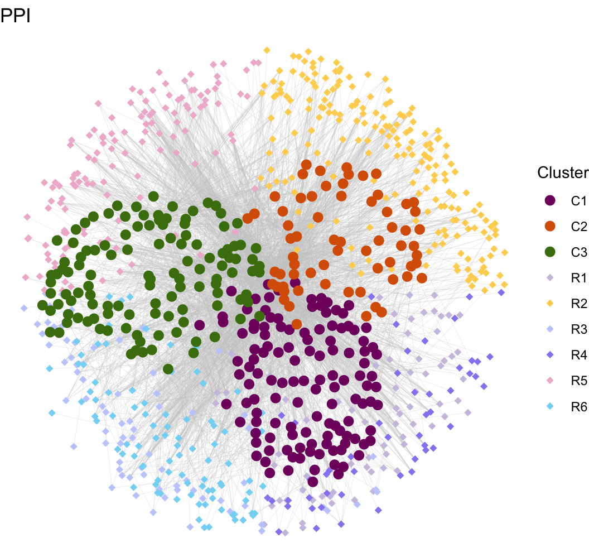
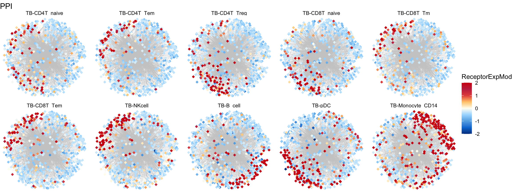

Chapter 5 L-R net
5.1 Ligand clusters
node.data <- read.xlsx("data/node.data.xlsx")
edge.data <- read.xlsx("data/edge.data.xlsx")
mat.receptor <- readRDS("data/mat.receptor.rds")
mat.ligand <- readRDS("data/mat.ligand.rds")
gg <- ggplot()
gg <- gg + geom_segment(mapping = aes(x = from.x, y = from.y, xend = to.x, yend = to.y), color = "#CCCCCC", size = 0.05, data = edge.data)
gg <- gg + geom_point(mapping = aes(x = pos.x, y = pos.y, color = Cluster), size = 2, shape = 18,
data = node.data[which(node.data$Type == "Receptor"), ])
gg <- gg + geom_point(mapping = aes(x = pos.x, y = pos.y, color = Cluster), size = 3, shape = 16,
data = node.data[which(node.data$Type == "Ligand"), ])
gg <- gg + scale_size(range = c(0, 6) * 2)
gg <- gg + theme_void()
gg <- gg + labs(x = "", y = "", title = paste0("PPI"))
gg <- gg + scale_colour_manual(values = c(color.lr))
gg
5.2 Receptor
plot.mat <- mat.receptor[node.data$Gene[which(node.data$Type == "Receptor") ], ]
plot.mat <- t(scale(t(plot.mat)))
plot.cell <- c("TB-CD4T_naive","TB-CD4T_Tem","TB-CD4T_Treg","TB-CD8T_naive","TB-CD8T_Tm",
"TB-CD8T_Tem","TB-NKcell","TB-B_cell","TB-pDC","TB-Monocyte_CD14")
plot.total.edge <- NULL
plot.total.node <- NULL
for (i in 1:length(plot.cell)) {
sub.1 <- edge.data
sub.1$Group <- plot.cell[i]
sub.2 <- node.data
sub.2$Group <- plot.cell[i]
sub.2$ReceptorExp <- plot.mat[match(sub.2$Gene, rownames(plot.mat)), plot.cell[i]]
sub.2 <- sub.2[order(sub.2$ReceptorExp), ]
plot.total.edge <- rbind(plot.total.edge, sub.1)
plot.total.node <- rbind(plot.total.node, sub.2)
}
plot.total.node$ReceptorExpMod <- plot.total.node$ReceptorExp
plot.total.node$ReceptorExpMod[which(plot.total.node$ReceptorExp > 2)] = 2
plot.total.node$ReceptorExpMod[which(plot.total.node$ReceptorExp < -2)] = -2
plot.total.node$Group <- factor(as.character(plot.total.node$Group), levels = plot.cell)
plot.total.edge$Group <- factor(as.character(plot.total.edge$Group), levels = plot.cell)
gg <- ggplot()
gg <- gg + geom_segment(mapping = aes(x = from.x, y = from.y, xend = to.x, yend = to.y), color = "#CCCCCC", size = 0.05, data = plot.total.edge)
gg <- gg + geom_point(mapping = aes(x = pos.x, y = pos.y), color = "#CCCCCC", size = 0.2, shape = 16,
data = plot.total.node[which(plot.total.node$Type == "Ligand"), ])
gg <- gg + geom_point(mapping = aes(x = pos.x, y = pos.y, color = ReceptorExpMod), size = 2, shape = 18,
data = plot.total.node[which(plot.total.node$Type == "Receptor"), ])
gg <- gg + theme_void() + facet_wrap(~ Group, ncol = 5)
gg <- gg + labs(x = "", y = "", title = paste0("PPI"))
gg <- gg +scale_colour_gradientn(colors = c("#00408e",
"#007ed8","#62aee5","#a8dcff",
"#fffef3",
"#ffca79","#e5524c","#c52f4e",
"#D01910"))
gg